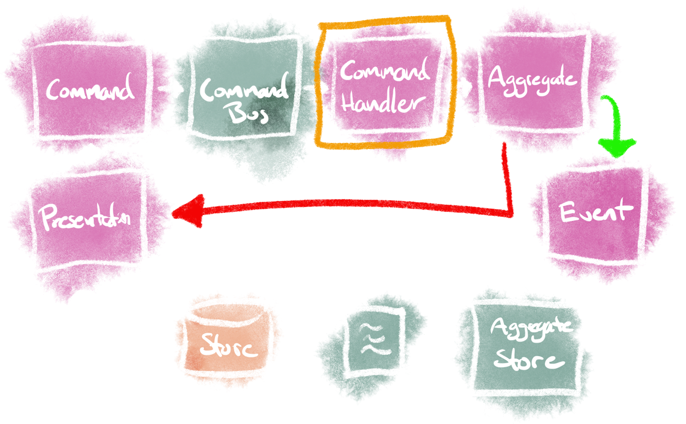

Practical event sourcing
with EventFlow
by Rasmus Mikkelsen
https://github.com/rasmus
Me?
-
eBay/Schibsted at DBA, Bilbasen and Bilinfo
- Backend developer
- DevOps engineer
- Infrastructure architect
- SiteOps and on-call
-
Working as SRE at Schibsted Data & Tech
- Support companies with ~100 k8s clusters
- Created EventFlow, an open source project
- First time doing a public talk üò¨
This talk
- Brief introduction to event sourcing
- See how to get started with event sourcing
- Convince you not to use event sourcing
- ... then talk about when use it
Introduction to
event sourcing
Traditional service
Traditional data store
| ID | FullName | Age |
1 |
rasmus mikkelsen |
21 |
- ID is a unique key
Traditional data store
- CRUD: Create, read, update, delete
- Stores current state
- Audit is stored separate (for critical systems)
- Awesome support in languages and ORMs
CRUD data stores
{
"id": 1,
"fullName": "rasmus",
"age": 21
}
{
"id": 1,
"fullName": "rasmus",
"age": 23 // age edited
}
{
"id": 1,
"fullName": "rasmus",
"age": 25 // age edited again
}
Event sourcing
- Stores changes as individual objects
- Append only
- Current state is sum of all changes applied in order
- Implementations often custom made
- Design is often a result of infrastructure preference
Event sourcing
| ID | Version | Event | Data |
1 |
1 |
Created |
fullName: rasmus m
|
1 |
2 |
NewAge |
age: 23 |
1 |
3 |
NewAge |
age: 25 |
IDandVersionform an unique keyVersionspecifies the order of events
Event sourcing
{
"id": 1,
"version": 1,
"type": "Created",
"meta" : {
"ip": "147.29.150.82",
"via": "browser"
},
"event:" {
"fullName": "rasmus mikkelsen",
"age": 21
}
}
- Events have two components, data and metadata
Event sourcing
{
"id": 1,
"version": 2,
"type": "NewAge",
"meta" : {
"ip": "147.29.150.82",
"via": "browser"
},
"event": {
"age": 23
}
}
Event sourcing
{
"id": 1,
"version": 3,
"type": "NewAge",
"meta" : {
"ip": "103.228.53.155",
"via": "mobile-api"
},
"event": {
"age": 25
}
}
Event sourcing key points
- Current state is the sum of all events, you need to apply every single one in order
IDandVersionform a unique key- Events are stored in an append only model
- Events are immutable - never ever, ever change them
- Event often relates to some business/user action
- Provides an excellent audit trail
EventFlow
- Created in 2015
- MIT licensed
- Written .NET/C#
- Concepts are similar to other frameworks and languages
General event sourcing concepts
- Command: represents a request to change the system
- Aggregate: an entity, or group of entities, that are viewed as a single unit and updated together
- (Aggregate) event: represents something that has happened, thus cannot be changed
Will be illustrated shortly
Additional EventFlow concepts
- Command handler: Maps a specific command to an aggregate
- Domain event: Wraps the aggregate event and metadata
Will be illustrated next slide
Overview of EventFlow concepts
Command
Command
public class CreateUserCommand : Command<UserAggregate, UserId>
{
public string FullName { get; }
public int Age { get; }
public CreateUserCommand(
UserId aggregateId,
string fullName, int age)
: base(aggregateId)
{
FullName = fullName;
Age = age;
}
}
- Value object that represents an action to take
Command handler
Command handler
public class CreateUserCommandHandler :
ICommandHandler<UserAggregate,UserId,
IExecutionResult,CreateUserCommand>
{
public Task<IExecutionResult> ExecuteCommandAsync(
UserAggregate aggregate,
CreateUserCommand command,
CancellationToken cancellationToken)
{
var result = aggregate.Create(
command.FullName, command.Age);
return Task.FromResult(result);
}
}
- 1-to-1 relation to a specific command
- Defines how to apply a command to the aggregate
Aggregate
Aggregate
public class UserId : Identity<UserId>
{
public UserId(string value) : base(value) {}
}
public class UserAggregate : AggregateRoot<UserAggregate, UserId>
{
// Public to do easy/lazy testing
public string? FullName { get; private set; }
public int? Age { get; private set; }
public UserAggregate(UserId id) : base(id) { }
// We'll fill in the rest later
}
Add method to mutate aggregate
public class UserAggregate : AggregateRoot<UserAggregate, UserId>
{
// ...
public IExecutionResult Create(string fullName, int age)
{
if (age < 13)
return ExecutionResult.Failed("Too young");
Emit(new CreatedEvent(fullName, age), GetMetadata());
return ExecutionResult.Success();
}
}
- Can
Emitzero or or more - Zero represents "no change"
Command
Event for user creation
[EventVersion("Created", 1)]
public class CreatedEvent : AggregateEvent<UserAggregate, UserId>
{
public string FullName { get; }
public int Age { get; }
public CreatedEvent(
string fullName,
int age)
{
FullName = fullName;
Age = age;
}
}
The Apply method
public class UserAggregate : AggregateRoot<UserAggregate, UserId>
{
// ...
public void Apply(CreatedEvent e)
{
FullName = e.FullName;
Age = e.Age;
}
}
- Responsible to updating current in-memory state
-
Executed on
- ... every
Emit - ... every time the aggregate is loaded
- ... every
- One
Applyfor every event type
Overview again
... and in code
// Create initial input
var (userId, fullName, age) = (UserId.New, "rasmus mikkelsen", 21);
// Send command via command bus
var command = new CreateUserCommand(userId, fullName, age);
var executionResult = await _commandBus.PublishAsync(command);
// executionResult.IsSuccess == true;
// Fetch aggregate directly
var userAggregate = await _aggregateStore.LoadAsync<UserAggregate>(
userId);
// userAggregate.FullName == "rasmus mikkelsen";
// userAggregate.Age == 21;
All good, but what about reads?
- We could just load the aggregate ü§î
- ... but really slow if enumerating aggregates
- ... want to query by something else than ID
- We need something else
CQRS to the rescue ü¶∏‚Äç‚ôÄÔ∏è
- Command and Query Responsibility Segregation
- Simply separate write and read operations
-
Often to different types of datastores
, e.g.
- Write: MS SQL Server, PostgreSQL, ...
- Read: Elasticsearch, Redis, ...
- Fits very nicely with event sourcing
Event sourcing + CQRS = ❤️
Event sourcing + CQRS = ❤️
Event listeners in EventFlow
public class UpdateReadModelWithCreatedUser :
ISubscribeSynchronousTo<UserAggregate, UserId, CreatedEvent>
{
public Task HandleAsync(
IDomainEvent<UserAggregate, UserId, CreatedEvent> domainEvent,
CancellationToken cancellationToken)
{
// Do awesome update of read model here \o/ ... the easy
// solution is to simply read the aggregate and map it to a
// read model. Remember to take the version into account!
return Task.CompletedTask;
}
}
All done?
- ✅ Optimized read models
- ✅ Cool domain using event sourcing
- ü•∫ ... need FirstName and LastName, not FullName
Problems
- Already live with millions of CreatedEvent
- Need v2 event with FirstName and LastName
- Not allowed to delete/change events
- Critical system, boss says "ZERO downtime!"
Upcast/upgrade events
... for when changes to the domain happen.
Upgraders in EventFlow
- Executed when events are read
- Can has as many as you like (performance)
-
Keep them simple!
- v1 to v2 upgrade
- v2 to v3 upgrade
- Executed in alphabetical order
Upgraders in EventFlow
V2 event
[EventVersion("Created", 2)]
public class CreatedEventV2 : AggregateEvent<UserAggregate, UserId>
{
public string FirstName { get; }
public string LastName { get; }
public int Age { get; }
public CreatedEvent(
string firstName, string lastName, int age)
{
FullName = fullName; LastName = lastName; Age = age;
}
}
Event upgrader in EventFlow
public class UserCreatedEventUpgrader : IEventUpgrader<UserAggregate, UserId>
{
public IEnumerable<IDomainEvent<UserAggregate, UserId>> Upgrade(
IDomainEvent<UserAggregate, UserId> domainEvent)
{
var createdEvent = domainEvent as IDomainEvent<UserAggregate, UserId, CreatedEvent>;
if (createdEvent == null) {
yield return domainEvent;
yield return break;
}
var nameParts = createdEvent.FullName.Split(' ', StringSplitOptions.RemoveEmptyEntries);
var createdEventV2 = _domainEventFactory.Upgrade<UserAggregate, UserId>(
domainEvent,
new CreatedEventV2(
nameParts[0],
nameParts[1],
createdEvent.Age
));
yield return createdEventV2;
}
}
Updated aggregate
public class UserAggregate : AggregateRoot<UserAggregate, UserId>
{
// Public to do easy/lazy testing
public string? FirstName { get; private set; }
public string? LastName { get; private set; }
public int? Age { get; private set; }
public UserAggregate(UserId id) : base(id) { }
// We'll fill in the rest later
}
Updated aggregate Apply method
public class UserAggregate : AggregateRoot<UserAggregate, UserId>
{
// ...
// We delete the old Apply method for the old event
public void Apply(CreatedEventV2 e)
{
FirstName = e.FirstName;
LastName = e.LastName;
Age = e.Age;
}
}
Update aggregate mutate method
public class UserAggregate : AggregateRoot<UserAggregate, UserId>
{
public IExecutionResult Create(
string firstName, string lastName, int age)
{
if (age < 13)
return ExecutionResult.Failed("Too young");
Emit(new CreatedEventV2(firstName, lastName, age), GetMeta());
return ExecutionResult.Success();
}
}
- ... and update the CreateUserCommand
- ... and update the CreateUserCommandHandler
Domain v2 go-live?
Domain v2 go-live üò≠
Updated domain v2 go-live plan
- ü§î multiple instances, v1 and v2 will both be live at the same doing rollout
- 1) Rollout v1.1 that is able to read both v1 and v2
- 2) Rollout v2 that writes v2 events, without v1
- Remember to keep old events, these are needed for reading and upgrading
- Success üéâ
Event sourcing, the bad parts
- A lot of ceremony. Any action requires a lot of code
- A lot of different ways to fill in the missing pieces
- Poor performance on writes, exceptionally bad with many events
- Too many concurrent updates can make a service useless
- Read models become eventually consistent, which adds complexity
Event sourcing, the good parts
- Fits very nicely with an event drive architecture
- Awesome together with CQRS, but that's just for reads
- Can provide an excellent link do user/domain actions
- Automatic retries for concurrent updates
Don't use event souring...
... it leads to pain and suffering... sometimes.
Don't use it in the wrong places
- Not in services with a lot of changes
- Not in high performance/concurrent writes
- Not in services with low importance
Don't use it for fun at work,
unless doing an experiment or to learn
- Don't force the decision to use event sourcing
- Don't enable every tool in the toolbox, start small
- Don't make simple domains overly complicated
Don't make first project
too complicated
- If you are unsure of the domain, it can cause a lot of breaking changes, which requires a lot of work
- Don't use all the theories, initially agree how to do it
- Many opinions on how to do “proper” event sourcing. Agree on what to do (and not)
- Be conscious about har deep into the mythical DDD waters you want to go
Don't underestimate
storage usage!!!
- Developers ‚ù§Ô∏èü홂ú®
- SiteOps ü§Æü§Øü§¶
- Append only model
- Events are stored forever, by default
- Define when you archive and/or delete events
- Snapshot is your friend for long lived aggregates
Consider event souring if...
... you are absolutely sure
If auditing is important
- Very easy to document what happened
- View flow leading up to a complicated bug
- Reproduce bugs in tests by injecting events
If data recovery is important
- An append only model, hard(er) to delete data
- Fix data corruption caused by bug
- Fix data corruption caused by wrongful/malicious edits
- Easy restore aggregates to a specific time
- In-place fix/skip/map of existing events
If it fits within your infrastructure
- Event driven (micro) service infrastructure
- ... remember to implement anti-corruption
- Supports an eventual consistent architecture
A few examples
Example - orders
Example - listings

Event sourcing
- Is an awesome piece of technology...
- ... but typically not the right one
Do you really need
event sourcing
for your next project?
Questions?
- Rasmus Mikkelsen
- https://github.com/rasmus/
- https://docs.geteventflow.net/